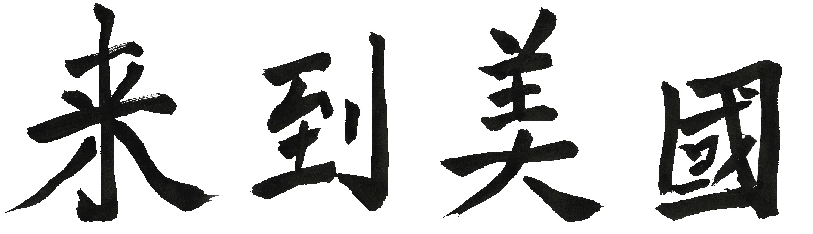

Teacher Hu Xingmei pauses outside the classroom door as students sit and ready their textbooks for today’s lessons.
“Class now begins,” Miss Hu announces as she enters the classroom in Xiaxi Junior Middle School.
“Stand up!” a student leader commands. Classmates alertly rise among tightly packed desks.
“Good morning, boys and girls,” Hu says. “Good morning, Miss Hu,” they reply in unison. In some classrooms in China, students and teacher bow to one another. Not in hers. "Please sit down,” she says.
Instantly, class gets underway. English and Chinese lessons happen in the hours soon after students get to school at about six o’clock each morning. The school day ends for seventh and eighth graders at 4:50; ninth graders go home 40 minutes later.
If my daughter, Maya, whom I adopted in China when she was nine months old, wasn’t abandoned as a newborn, her birth family might have raised her in Xiaxi Town. She might have sat among the 30 to 40 students in Miss Hu’s classroom to learn English. Instead, Maya studied Mandarin at her high school in Cambridge, Massachusetts. In the month before her senior year, she returned to this farming town where her life began. With “hometown” girls who could have been childhood friends, Maya learned what it’s like to grow up as a daughter in this rural town.
In getting to know each other, the Chinese and American girls share what’s been the dominant experience of their young lives: learning. They find out that the ways they learn, which feel natural to them, appear odd to their foreign friends. This chasm in the girls’ school experiences mirrors what scholars find in their two nations’ vastly different approaches to educating their young. The cultural values of each country are woven intricately into classroom practices. What and how each girl learns informs, in turn, how she interacts with the larger world and views her possibilities in it.
Scholars analyzing education in China highlight this contrast. In her book Cultural Foundations of Learning, Brown University Professor Jin Li maps requisite qualities of Chinese students using words such as hardship, respect for authority, self-exertion, diligence, humility and perseverance. These key attributes of learning, she notes, are grounded in Confucian values. Western teachers, on the other hand, endorse students’ active engagement, creativity, curiosity, and their ability to communicate ideas as they challenge authoritative knowledge. Li summarizes the Chinese way as “virtue-oriented” and the Western one as “mind-oriented.”
Maya and her new Chinese friends ignore such labels as they exchange learning experiences. In plainspoken, girl-to-girl conversations they just tell each other “here’s how I learn,” casting away the overhangs of judgment that often curtail cross-cultural exploration.
School Days
On Maya’s first full day in Xiaxi, Teacher Hu shows her around the school. It is August, so classes are not in session. As they walk down white tiled-corridors past empty classrooms, Hu translates some of the messages on the walls exhorting students to work hard and obey the rules.
Maya emerges with “a kind of a strange” sense of belonging in this place. “Miss Hu felt she could connect with me because I look like some of her students,” Maya tells Jennie, who was her crib neighbor at their orphanage in nearby Changzhou and is now Maya’s companion on this journey back to the rural towns where each of them was abandoned. “Miss Hu told me she thought I would have worked hard at her school. It felt emotional because I had a clear picture of what my life would have been like, the teacher I would have had, the school I would have gone to.”
From 1982 until 1985, Hu attended junior middle school in her family’s village of Sanxing, not far from the center of Xiaxi Town. Only about a tenth of her classmates tested well enough to go on to senior middle school, which is what Americans know as high school. She was one of them. For the next three years, she attended Xiaxi Middle School, in buildings located where she teaches now.
Back then, families generally made sure their sons were educated, and only when resources permitted did they send their daughters to school, sometimes for only a few years. Hu’s parents had two daughters, so no brothers competed for the family’s resources to pay school fees. At the end of twelfth grade, Hu scored high enough on the gaokao, the university entrance exam, and went to the nearby city of Changzhou to study. After two years at the university and marriage to a college-educated chemist who also grew up in Xiaxi, Hu began to teach English. They raised their only child, a daughter, in Xiaxi.
From where Hu sat then to where she stands now, she sees huge changes in the daily lives of students. “When I was a child, our study life was not so hard as it is today,” Hu says. “We didn’t have so much homework so after school we helped our parents do some farm work. I could do many things other than study when I was a little girl, like wash clothes, clean the house, and get grass for our goats to eat.”
China’s economy is much stronger now and living conditions in Xiaxi have greatly improved since Hu was a child. Back then families and teachers of China’s elite were the ones to emphasize that dedicated study leads to academic achievement. Now rural families echo this Confucian idea, prodding their only child (or, in some families, a pair of siblings) to compete for highly prized university seats. As a consequence, “the students have fewer and fewer activities outside of school,” Hu says. “They spend most of their time in the classroom because students in other schools do it like this. So if we don’t do it the same way, maybe our students will not get good results on the exam. When I was young, we didn’t have so much pressure as the students do today.”
Gaokao
The gaokao score is the sole academic determinant of a student’s admission to a university in China. Youngsters begin absorbing the significance of the gaokao score as early as primary school. In farming towns like Xiaxi, families and teachers view this college entrance exam as the “great equalizer.” Motivational messages remind rural high school students of this exam’s importance: “Without gaokao, how can you beat the children of the rich?”
Early in June, twelfth graders endure this several-day exam that is largely a multiple-choice ordeal. In the preceding months and weeks, students throughout China skip meals and sleep as they memorize answers and take multiple rounds of practice tests until late into the night. While they study, family members visit local temples or statues of Confucius and leave gifts to bring good fortune. Chinese media play their predictable role by publishing photographs of students’ extreme devotion to study. There’s the girl at her desk who attaches her hair to a hanger with clothespins so she’ll be jolted awake if her head dips towards sleep. Or the students wearing oxygen masks with their eyes fixed on schoolbooks.
Families usually accompany their students to the test site. They rent hotel rooms where their children can rest between exam sessions. Traffic is blocked from nearby streets, and authorities restrict noise in area surrounding the test site. Each day of the exam the students from Xiaxi say goodbye to parents and grandparents at the gates of a high school in Changzhou. When they emerge after the final test, their families are there to greet them with flowers and gifts.

Sometime during the days of testing, students will be asked to select an essay topic from a set of prompts. They earn a high score when they skillfully knit together evidence of their deep classical knowledge with keen awareness of current events. A prompt from the 2012 gaokao illuminates the challenge: “Old Ji is a railway security man, and he works on a mountain. His job is to examine the railways to prevent the fallen stones and trees from affecting the trains. He salutes every time the train passes, and the train honks its horn in return. What do these scenes remind you of?”
The essay score is part of the cumulative gaokao score. It’s added to scores in math, Chinese, a foreign language (usually English), and a subject cluster – either science, which is largely quantitative, or humanities, with more open-ended questions. Universities admit students based on their gaokao score; they require no personal essay, recommendation letters, or roundup of extracurricular activities and community service that could showcase a student’s different strengths.
“In China, we just pay more attention to the students’ exam points, and by doing that we ignore their other abilities,” Miss Hu explains. “As a result, many students can’t do some things with their hands. They are just good at doing exams.”
This regimented, stress-inducing preparation for the gaokao is leading more of China’s exceptional students to apply to universities overseas. If America is their chosen destination, they attend SAT and TOFEL (English language) preparatory courses. Seeing the outflow of top students, Chinese education officials are acting to reform the gaokao. These changes will add flexibility to the entire process of test taking as well as encourage changes in university admission.
As Maya learns about learning from girls in Xiaxi, she comes away with a similar sense as Hu about the intense focus on exams. Maya’s new friends’ ideas about what it means to be “smart” contrast with her own sense of that word. “Being smart is about the high ranking a teacher gives them,” Maya wrote in an essay about what she learned from her Chinese friends, “and studying is their only way of getting there.” Maya surprises her Chinese friends when she describes what she learns from out-of-school activities, such as her environmental activism and dance. To their way of thinking, those experiences aren’t real learning since they don’t happen in a classroom and she isn’t being tested.
Reforming the Gaokao

Today, fewer twelfth graders in China choose to follow the country’s prescribed path to a university. Instead of preparing for the gaokao, China’s ultra-competitive university admission test, increasing numbers of China’s brightest teens study for the SAT and apply to U.S. universities. Between 2010 and 2015, the number of Chinese students enrolled in U.S. universities nearly doubled; during this same period, enrollment of Chinese students in U.S. primary and secondary schools nearly quadrupled.
This exodus has ignited efforts to transform classroom teaching in China. Education officials want the centuries-old model of rote memorization of specified lessons to make way for teaching approaches emphasizing analytical thinking. They are making key changes in the kind of learning of the gaokao measures. They also want high school students to be given opportunities to choose what they want to study by having schools offer a broader range of courses.
Once reforms are in place, students will select gaokao scores on three subjects among six possibilities to submit to universities: biology, chemistry, geography, history, physics and politics. When they apply, students will indicate their prospective major in college. Maximum scores for the foreign language test (usually English) will be reduced from 150 to 100, while the value of the Chinese score will rise from 150 to 180. All twelfth graders will still be tested in Chinese and math in the usual June gaokao, but students will now have a second chance to take the foreign language and elective subjects. Students’ scores will remain valid for two years, instead of one.
In addition, the gaokao score will no longer be the sole factor to determine a student’s university admission. Applications will include records of students’ physical health, along with their “morality standards, art cultivation and social practice.” Volunteer activities will earn extra points.
These changes were piloted in Zhejiang province and Shanghai during the 2015-2016 school year. That experience suggests that stiff resistance is likely to greet these changes.
With most families in Xiaxi raising one child, that student’s score on two key exams – one at the end of ninth grade, the other at the end of twelfth – configure the odds that her family will advance to a higher rung on the ladder of economic mobility. Yet even when students in rural regions score exceptionally high on the gaokao, they often need to leap additional hurdles to secure a seat at a top university. This is because a student’s hukuo, the official residency document, plays a complex role in determining which university she will attend. Hindered by the scarcer resources available for her primary and secondary schools, this rural student is disadvantaged again by an admission process favoring those with an urban hukuo. A recent analysis revealed that a Beijing student is 41 times more likely to be admitted to Peking University, China’s toughest seat to attain, than a student in largely rural Anhui province.
Girls also have a tougher time being admitted to a good university since they need to score higher than boys from their region to be given a seat. Requiring girls to score higher is China’s way of safeguarding the gender balance at this advanced level of schooling. As more girls are raised as only children, they’ve become better educated than when brothers received the larger share of families’ school resources. Given the opportunity to learn, girls outperform boys in primary and secondary school, and despite their obstacle to college entry (and fewer girls in the population) more young women than men are enrolled in undergraduate and graduate programs.
Preparing for the gaokao is grueling. The monotony of classroom exercises and repetitious nighttime study escalates in rigor and hours as students advance toward the final tortuous year of twelfth grade. Hu’s daughter, Xue Piao, says school “bored” her. Still, neither boredom nor sleepiness – from her nightly hours devoted to homework drills – could excuse inattentiveness. She had to pay attention so she’d remember exactly what the teachers presented in class and know the correct answers on the test. “Every day we had tests and every week we had a big exam,” she says. “I felt sleepy but I couldn’t afford to sleep because the scores were important.”
Piao, who uses her English name, Tiara, with Maya and Jennie, describes how teachers post students’ test scores in class next to their names. “There was an average score,” Tiara explains. “Those who scored under that average, the teacher would find them and blame it on them. There would be shame if you got low scores.”
“Those who score low, how do they respond?” she’s asked.
“Work harder and get higher scores,” Tiara replies, as though that is the only possible response. “And next time they will be in the top,” she says, smiling.
Having had a Mandarin teacher who was educated in China, Maya relates to this dynamic. “My teacher did that in Chinese class,” she tells Tiara. “Then he would go around and give a talk about how we were not good enough and why he wasn’t happy with us. He did this with every test, every person, no matter what the score was.”
Tiara nods, perhaps relieved to hear that this happens in America, too.
Jennie listens with a look of wonderment. She never studied Chinese and hasn’t had this kind of experience. Teachers at her high school, she says, “might show grades on the board, but they never put a name with them.”
The expression “Gain one point, surpass a thousand people” is popular with students on Chinese social media. Instead of using the usual character for “surpass” (chaoguo), this online phrase uses gandiao, a word that implies a killing. As Yifu Dong, who graduated recently from a top high school in Beijing, observed in an article he wrote: “Neither the language nor the sentiment behind it [this phrase] is likely to strike Chinese students as unusual.” It expresses the fierce competitiveness ingrained in students who study until finally they reach the end of their endurance.
Heavy emphasis on testing success in China means that schools rarely teach non-academic topics, including sex education. When bodily health is talked about, neither teachers nor students take it seriously. “We just take those tests [about sex education], but the teacher tells us the answers so it’s like we don’t have it,” Tiara tells Maya and Jennie. Other girls in Xiaxi and Xixiashu mention to the Americans that they’ve heard a few things said about girls’ safety, but not much else.
Parents rarely bring up the topics of puberty or pregnancy, either. “My mom just told me I should protect myself and keep away from bad boys,” says Yuan Mengping, a college-aged friend of Maya’s in Xiaxi. Mengping’s neighbor Chen Chen says that her grandmother “thinks that when a girl goes outside alone, it’s not very safe so she should go outside with her friends. Then she can protect herself.”
Confucian values promote sexual modesty for women, even if such beliefs have gradually lost their hold over what actually happens. Sexual activity, absent preventive guidance in school or by families, leads to consequences such as a recent rapid increase in HIV infection in young people. A 2010 national survey of “youth access to and use of reproductive health services and education” by Peking University and the United Nations Population Fund found that only four percent of women aged 15 to 25 “displayed adequate knowledge of sexual and reproductive health.”
Unmarried women experience difficulty in obtaining a gynecological exam; as a doctor at Beijing Obstetrics and Gynecology Hospital observed in a news story, “Chinese traditional culture does not allow some women [those who are unwed]” to have a pelvic exam.
In this closed-mouthed atmosphere, it’s little wonder that millions of people are drawn to online animated videos depicting procreation and related topics. In the past few years, a cleverly produced video series about these subjects has been shared widely on social media.
Shaming my Family
Of more than nine million students who take the gaokao each year, roughly one-third fail to get into an academic university. Those who fall short often end up at overcrowded “cram schools” where hundreds of students sit in rooms and perform practice drills. They will take the exam again the following June. Fences ring interior balconies of some schools acting as barriers against attempted suicides. In 2014, Chinese officials examined apparent causes of student suicides and concluded that more than 90 percent occurred “after arguments with teachers or were attributed to the intense pressure to study put on young people.”
If these youngsters don’t improve their gaokao score, they will not be admitted to a university for academic study. The alternative is either to enter the workforce – for rural Chinese, most likely as a migrant worker – or to enroll in a vocational program.
On the day Jennie meets Jin Shan, she sits with family members around a wooden table in Shan’s paternal grandmother’s house in Xixiashu. Pei Adi, her 66-year-old grandmother, grew up in a small dirt house in Xixiashu and barely attended school. As the oldest daughter, family duties ended her education early. Chen Liuhong, Shan’s 41-year old mother, is the third child (second daughter) in a family that had resources for her to finish middle school. After that, Liuhong began years of work as a migrant tailor before she and her husband, a local man who completed only primary school, returned home to Xixiashu. Now they own a store where they sell steel for local construction.
Shan’s faded school certificates decorate the long concrete interior wall of her grandparents’ home. She was raised in this house after her parents left her at seven months old when they went to find work in distant northern cities. They returned when she was in junior middle school.
“Are you the first to go to college in your family?” Jennie asks Shan. All she knows is that Shan took the gaokao in June. Shan responds in English so that her grandmother and mother will not understand. “Yes, just for construction,” she says, alluding to a less-than-hoped-for vocational assignment.
A few days before Jennie arrived, Shan learned that her gaokao score was too low to qualify for an academic seat at a university. It was high enough, though, for her to enroll in a vocational program at a university; she wasn’t yet sure which one it would be.
“My parents had high hopes,” she tells Jennie, softly. “So they are not proud of me. They hoped for me go to a good college and study knowledge. But I can’t. So they are not proud of me, I think.”
As the girls get to know each other, Shan tells Jennie how “most families and students put their dreams in gaokao.” To become a doctor, a teacher or other high-status professional, Shan explains, “first they should do their best on the gaokao and get a high score and they will enter a good university. Then, maybe they’ll realize their dreams and maybe later when they are parents or grandparents, their life will be better.” When she was little, Shan remembers her parents would say to her “you should study harder and harder and then you can go to a good university.” By the time she was in middle school, “my parents gave me so much stress. They wanted me to go to a good high school, where I will get a better education and it will be easier to enter a good university,” she says.
At the end of ninth grade Shan passed the exam to get into senior middle school. Still, school bored her, so she wasn’t motivated to do the hard work required in the upper grades. Shan knew her parents expected her to perform well on the gaokao, so throughout her teen years she felt the stress of not meeting her parents’ expectations. She feared she would not pass the gaokao – and those fears turned out to be true.
After the American girls depart in late August, Jennie and Maya start their senior years at public high schools in Massachusetts. Like nearly all of their classmates, they visit and apply to many universities and colleges. At the same time, Shan travels 90 miles from Xiaxi to become a first-year student at Nantong Vocational College in northeast Jiangsu province.
By the end of her first year, Shan sounds happy and more self-assured, even if she is a bit homesick, especially for home cooking. She believes that her parents are moving past their initial anger and disappointment with her gaokao result and now realize that construction suits her well. With contacts in the industry, her parents seem confident she’ll find a job. Shan likes being among the few girls majoring in construction; most of them live in one narrow dorm room with bunk beds lining the walls. “In high school, I wasn’t interested in Chinese or math and all those subjects,” she says, “At the university, I’m interested in construction so I think I’ll do well and find a good job.”
Path Setting Test
The gaokao is years away for Miss Hu’s junior middle school students. Their immediate focus is to prepare for a different exam called the zhongkao. Ninth graders must pass this challenging test to be admitted to a senior middle school.
To achieve this is to endure tediously long hours of memorization. Tiara recalls that her junior middle school day ended about 12 hours after it began early each morning. At school, she walked by messages like this: “If today we don't bury ourselves in books and study hard, how can we raise our heads up and be men tomorrow?” Then, at home, she “worked every night until midnight doing those sheets of paper and preparing for my final exams of junior school,” she says.
Do As I Say

Motivational words appear on the walls and columns at Xiaxi Junior Middle School. They reinforce precepts of Confucian learning. Since Confucianism teaches that humans are not born with the necessary virtues and moral sensibilities to achieve lifelong learning, students must internalize humility and practice perseverance if "great learning" is to occur. Brown University professor Jin Li observes that this process "is fraught with challenges, temptations, and disappointments – thus requiring unflagging resolve and steadfast persistence." (Click on columns above for translations).
“Diligence is the path up the mountain of knowledge. Hard work is the boat across the endless sea of learning.”
Han Yu (768–824) was an essayist and classical prose writer during the Tang Dynasty. His influence on Chinese literary tradition is considered the equal of Dante, Shakespeare or Goethe in their times. His political views were aligned with a strong central authority and he was orthodox in cultural matters. He was a staunch defender of Confucianism at a time when its doctrine was in decline.
“To accomplish something is the supreme state of life.”
Friedrich Engels (1820–1895) was a German socialist leader and political philosopher who collaborated with Karl Marx on The Communist Manifesto (1848). His own works include The Condition of the Working Classes in England (1844) and The Origin of the Family, Private Property and the State (1884).
“We should work out regularly and persistently. Human beings are like machines, which need to move constantly to avoid getting rusty.”
Zhu De (1886–1976) was a Chinese general, revolutionary, and pioneer of the Chinese Communist Party. Though born poor, he was adopted by a wealthy uncle when he was nine years old. He gained admission into a military academy. When Mao Zedong assumed power, he became a high-ranking official in the Communist Party.
“Knowledge is important but the path you choose is as important as knowledge itself.”
Li Siguang (1889–1971) was a geologist who established the tectonic system, a basic concept of geological mechanics, in 1920. After 1949, he was elected vice president of China’s Academy of Sciences, president of China Association for Science and Technology, and Minster of Geology. He served as a member of the first three National Congresses and on the ninth Chinese Communist Party Central Committee.
“Modesty helps one to go forward, whereas conceit makes one lag behind. This is a truth we must always bear in mind.”
Mao Zedong (1893–1976), known as Chairman Mao, was the founder of the People’s Republic of China. He governed as Chairman of the Communist Party of China from the nation’s establishment in 1949 until his death in 1976. He said these words in September 1956 in his opening address of the Eighth National Congress of the Communist Party of China.
Yan Yujiao, one of Maya’s acquaintances in Xiaxi, aspires to become a news anchor. She scored very high on the June zhongkao exam, so while Maya is visiting, Yujiao packs her bags and leaves Xiaxi to begin tenth grade at a top senior middle school in Changzhou’s Wujin district. During the next three years, with occasional weekends at home, Yujiao’s days and nights will be directed toward one goal: success on the gaokao.
But the scores of 60 to 70 percent of Yujiao’s peers at Xiaxi Junior Middle School were too low to earn a seat at a senior middle school. They had two options: either start working or enroll in a vocational boarding school for training. Sixteen-year-old Chen knows her low zhongkao score had erased her possibility of ever taking the gaokao.
When she was seven years old, Chen’s parents divorced and both moved away, leaving her to be raised by her paternal grandparents, who are farmers. While urban families often bolster classroom lessons with out-of-school educational activities and tutoring, such extras aren’t part of most rural children’s lives. Like other rural elders raising “left-behind” children, Chen’s grandmother attended just a year of primary school, her grandfather not many more – leaving them ill-prepared to boost Chen’s academic prospects.
Chen loves singing, especially Western songs. On walks in Xiaxi, Chen sings the English lyrics to music she plays on her mobile phone. When Maya returns to the United States in September, Chen leaves Xiaxi to live in a dormitory at a vocational school in the nearby city of Changzhou. She is among more than 11 million students to enroll in technical or vocational schools each year in China; some 15,000 of these schools serve students like Chen who are in their mid-teens.
By Lunar New Year, Chen relishes her independence. Her major area of study is computer networks, but what she enjoys most about school is the freedom to hang out with friends and listen to music. Chen also has taken her first job as a waitress in an upscale restaurant near her school. She wants to earn spending money and, as she puts it, “toughen herself.” Doing a job, she says, is her way “to feel the real world.” After a few months, she’s apparently had enough of the real world and quits the job. Singing still inhabits her dreams.
Chinese officials worry that the nation’s system of vocational education training (VET) serves neither the students’ futures nor the country’s economic needs. Job training and classroom instruction are weak at most of these schools, Chinese educators acknowledge. A Stanford University review confirms this view: “Some VET schools seem to be no more than recruiting grounds for factories,” the review concludes. Students drop out at a higher rate than those at academic high schools. According to the Stanford researchers, “Even when we compare VET students with the worst academic high school students in their schools, attending a vocational high school reduces general skills and does not lead to gains in specific skills (relative to attending academic high school).”
Jennie’s friend in Xixiashu, Zheng Fan, also went from junior middle school into a vocational training school due to her low zhongkao score. Unlike Chen, Fan enjoys school and feels a strong obligation to her parents to do well in her studies. She tells Jennie that she’s working hard in her study of customs declaration and international freight. Her parents favor this pathway for their only child; being a customs official would provide a stable and secure life for her as a government employee.
When she was younger, Fan’s dreams were different. “I wanted to be a kindergarten teacher because I think little children are all very lovely. Or a doctor,” she says. “My brother died of a brain tumor when he was five years old, and my father and mother were very sad. I’m the second child in my family, so I listen to my parents and I do the things they want. I very much respect them and love them. I want to give them a better life.”
Both of Fan’s parents work in factories; her father makes paint, her mother makes clothing labels. Desire to do better for her family fuels Fan’s hunger for learning. “I do my best and put in more effort. I am very hard-working and very confident,” she says. “My actions revolve around my parents’ beliefs and standards. I believe the most important people in the world are your parents. In life you encounter many people you can’t trust, but you can always trust your parents. Everything they do is for your benefit because you came from their blood and they would never want to harm you. This is why I believe one must obey one’s parents.”
Fan’s perseverant attitude reaps rewards. In the summer after Jennie’s visit, Fan completes her four years of vocational school and applies to Changzhou University to continue her studies. She intends to graduate at 22 with a major in business English. Since she didn’t attend an academic high school, Fan can’t study in Changzhou University’s academic program, so she’ll be a zhuanke graduate, earning a certificate, not a university degree. After graduating, she hopes to find a steady job in foreign trade.
 Coming to America
Hu’s daughter, Tiara, decided early in her first year of senior middle school that she didn’t want to take the gaokao. Tiara told her mother that she wanted to study instead for the SAT and TOFEL exams so she could apply to American colleges. “She said her math was not so good,” says Hu. “In China, if your math is not good, then you can’t get good results in gaokao because there are so many points in math.” Tiara feared that her gaokao score would not match either her or her parents’ expectations for a good university education. “It was a very good idea,” Hu says. “I supported her. So did her father. We supported her all the way.”
Tiara traveled 56 miles and stayed in Suzhou for six months to attend an SAT preparation class. “The SAT is much easier than the gaokao,” Tiara says, though she admits she didn’t study hard enough to do as well as she could have. She did not get into her first-choice university.
“Most students in Chinese universities find campus life boring,” she says. “My life in an American university may be a challenge for me, but I am willing to take it because I hope my future life will be more exciting.”
Tiara’s fellow SAT students imagine America to be “a melting pot … so many different kinds of people, different kinds of cultures there,” based on what they’ve heard from Chinese students already there. “We can learn many new things that we didn’t know before. So it’s the perfect place for us to go.”
Many of her peers agree. In 2015, there were 304,040 Chinese students enrolled in U.S. universities, more than from any other country. In each of the past eight years, there’s been a double-digit increase in the number of students from China studying at American universities and colleges. In 2015 there were almost twice as many Chinese students in the U.S. as five years earlier – many of them young women like Tiara who are advantaged by China’s one-child policy. In contrast, only 13,763 Americans studied at a Chinese university the year that Tiara came to the United States, a 4.5 percent decrease from the previous year.
Maya and Jennie see Tiara off as she leaves for the Shanghai airport. This is Tiara’s first time in the United States. She stays for a few days in Boston with a Chinese friend before taking a bus to Syracuse University, which she chose from among four American schools that admitted her. She plans to major in international relations.
Tiara’s studies go well, but she must adjust to cultural differences. For starters, male students live in the dorm room next to hers; in China, she says, male students aren’t allowed to enter women’s dorms. At Syracuse, everyone on the corridor uses the same bathrooms. Then, there are the parties: “I am not a party animal, but I go to some on Friday nights. Americans really know how to play,” she observes, laughing at recollections of those evenings. “Yeah, they really know how to enjoy themselves. They dance. They drink alcohol, even though it’s not permitted. You can see they’re so happy. They can live their life. It’s a way to relax after working hard during the week. My Chinese friends and I relax by maybe driving to get some good Chinese food and talking to each other, so that’s different.”
Tiara appreciates that grades are kept private in the United States. Only she decides whether to study harder. “If you get a low GPA, you don’t have to be embarrassed. The only one who knows is you. All you have to do is maybe work harder.” She’s impressed by how “some Americans seem like they’re playing around every day, but then they do well in class. You don’t see them sitting there and studying, but they still do well.” Shaking her head, she says, “I still don’t get that.”
When she’s with other Asian students, it’s hard to break the habit of talking about scores. “Not every day, but after exams we’re talking about, ‘Hey, how much did you get for this class?’” she says. “But American students don’t really care about that. One of my Chinese friends was getting an A in chemistry and he was showing off around the dorm, ‘Hey, I’m getting and A in chemistry.’ But nobody cared. It seemed so weird for him to do that.”
Tiara likes being around girls of all nationalities who are striving to reach conventionally male goals, as she is. “In China, dream jobs for girls are mostly like teachers or maybe nurses. My dream is to be a diplomat. I seldom had girlfriends around me in China who shared this ambition. But in my international relations classes most of the girls want to get a job in the United Nations or something about politics, just like the boys. It’s really good to have someone to share your interests.”
By her junior year, Tiara has moved off campus and shares an apartment with a Chinese student who’s been her closest friend since freshman year. To celebrate the Harvest Moon festival, they invite friends to join them in making mooncakes and share a meal. After graduation, Tiara plans to return to China and find work there. This is what her parents want her to do. “I am my parents’ only child, so it’s better for me to stay in China in the future,” she says.